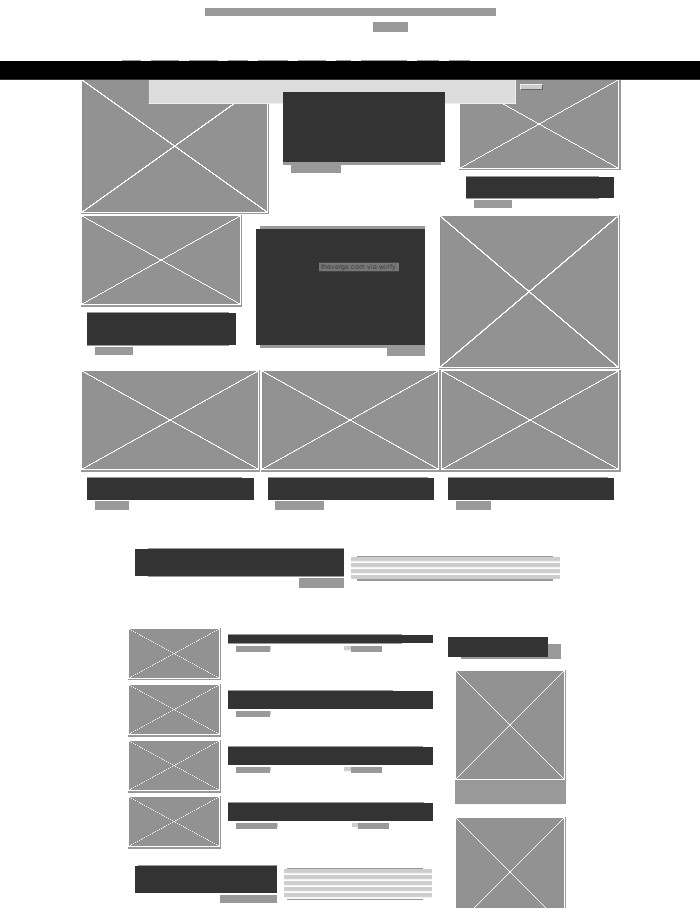
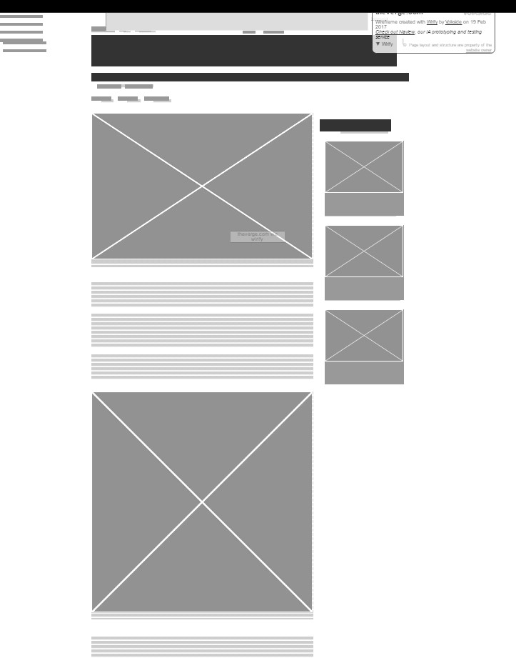

Learn to Use Design Process and Wireframing
Jabarkan masalah apa yang halaman web tersebut ingin pecahkan melalui tampilan visual?
Di halaman utama ada box-box untuk penampilan Top Stories. Ukuran box ini berbeda-beda sesuai dengan topik yang ada.
Buatlah wireframe tiap halaman yang sudah dipilih. Kamu bisa menggunakan kertas dan pulpen saja (yang kemudian nanti difoto), maupun tool wireframing digital (yang bisa di-export atau screenshot).
Dari wireframe screen capture, terlihat kalau box ini tidak terlayout dengan rapi, dan untuk tiap artikel pasti mempunyai mininal satu image atau video.
Kumpulkan hasil wireframe yang sudah kamu buat ke dalam satu folder. Tampilkan pada halaman.
Main page

Article page
